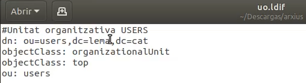
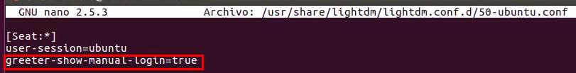
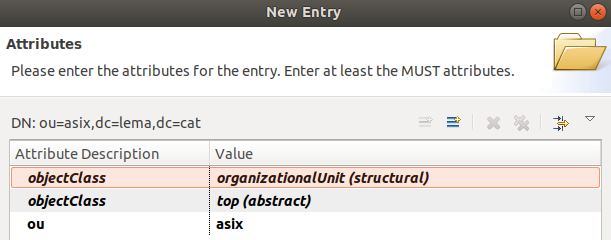
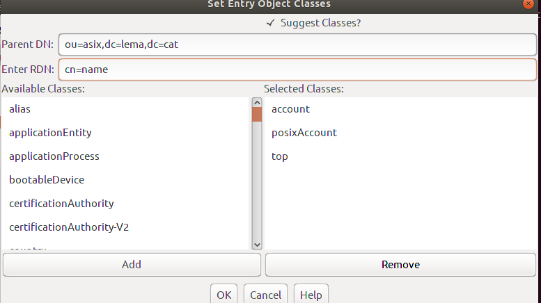
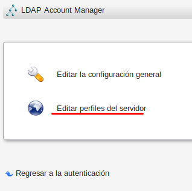

Insta·lació i Configuració de OpenLDAP
1 Instal·la OpenLDAP:
1. Crea un servidor amb OpenLDAP
1.1. Configuracions inicials al servidor
En primer lloc configurem la xarxa, li donme una IP fixa al servidor.
També cal afegir la ip fixa més el nom del domini a l'arxiu
/etc/hosts.
1.2. Instal·lació i configuració dels paquets
Instal·lem els paquets necessaris
slapd ldap-utils -y.
Després executem la seguent comanda per configura el
slapd.Omitim la configuració del servidor OpenLDAP.
Introduim el nom del domini
lema.cat.Ara indiquem el nom de l'oraganització.

I li donem una contrasenya.
El motor de la BD la deixem per defecte
MDB.
Boorem la BD quan es purgen els paquets de
slapd.
Finalment Movem la BD antigua.
1.3. Creació de l'esquema base amb un fitxer ldif
Aquest exercici es realitzara en el següent punt.
2 Creació de UO,grups i usuaris amb fitxers LDIF
2.1 Crea el domini, l'administrador, una uo, un grup i un usuari amb fitxers ldif
Creem l'arxiu
ldifper crear un grup.Creem l'arxiu
ldifper crear una UO. Creem l'arxiu
ldifper crear un usuari.
Ara afegim la configuració dels arxius
ldifamb la següent comanda.Comprovem amb
slapcatque tot s'ha creat correctament.
3 Configuració d'un client OpenLDAP
3.1 Valida un client al domini
El primer pass es configura la xarxa del client donant-li una IP fixa hi ha la porta denllaç la IP del servidor.

Ara cal instal·lar els seguent paquets.
Configurem els paquets instal·lats anteriorment, ara indiquem la ip del servidor.
Indiquem el nom del domini creat al servidor.
Seleccionem la versió 3 de
LDAP.Deixem per defecte el metode dencriptació.
Seleccionem que volem establir el root local.
Indiquem que no ens demane login a la
LDPA BD.
Afegim el nom d'usuari per al root.
Afegim una contrasenya per al root.

Ara editem l'arxiu
/etc/snnwitch.confi afegimldapdespres de compat tal com surt a la següent captura.Ara editem l'arxiu
/etc/pam.d/common-sessioni canviem el umaks ambumaks=077.
Ara editem l'arxiu
/etc/pam.d/common-passwordi borrem el camp seleccionat a la capturause_authok.Ara editem l'arxiu
/usr/share/lightdm/lightdm.conf.d/50-ubuntu.confi afegimgreeter-show-manual-login=true. 
*Versió Ubuntu20 - Instal·lar paquet nscdReiniciem l'ordinador i ja ens podrem logejar amb l'usuari creat anteriorment dins de OpenLDAP.

4 Esquema referent a LDAP
4.1 Cerca la informació referent als esquemes del LDAP que hem utilitzat quan hem creat la uo, el grup i l'usuari
5 Atributs Obligatoris i Opcionals
5.1 Quins són els atributs obligatoris i els opcionals per a les classes que hem treballat?
Arxiu de grup.
`posixGroup` Atributs Obligatoris: cn $ gidNumber Atributs Opcionals: userPassword $ memberUid $ member $ description `top` Atributs Obligatoris: member $ cn Atributs Opcionals: businessCategory $ seeAlso $ owner $ ou $ o $ descriptionArxiu de UO.
`organizationalUnit` Atributs Obligatoris: ou Atributs Opcionals: userPassword $ searchGuide $ seeAlso $ businessCategory $ x121Address $ registeredAddress $ destinationIndicator $ preferredDeliveryMethod $ telexNumber $ teletexTerminalIdentifier $ telephoneNumber $ internationaliSDNNumber $ facsimileTelephoneNumber $ street $ postOfficeBox $ postalCode $ postalAddress $ physicalDeliveryOfficeName $ st $ l $ description `top` Atributs Obligatoris: member $ cn Atributs Opcionals: businessCategory $ seeAlso $ owner $ ou $ o $ descriptionArxiu d'usuaris.
`inetOrgPerson` Atributs Obligatoris: - Atributs Opcionals: audio $ businessCategory $ carLicense $ departmentNumber $ displayName $ employeeNumber $ employeeType $ givenName $ homePhone $ homePostalAddress $ initials $ jpegPhoto $ labeledURI $ mail $ manager $ mobile $ o $ pager $ photo $ roomNumber $ secretary $ uid $ userCertificate $ x500uniqueIdentifier $ preferredLanguage $ userSMIMECertificate $ userPKCS12 `organizationalPerson` Atributs Obligatoris: - Atributs Opcionals: title $ x121Address $ registeredAddress $ destinationIndicator $ preferredDeliveryMethod $ telexNumber $ teletexTerminalIdentifier $ telephoneNumber $ internationaliSDNNumber $ facsimileTelephoneNumber $ street $ postOfficeBox $ postalCode $ postalAddress $ physicalDeliveryOfficeName $ ou $ st $ l `person` Atributs Obligatoris: - Atributs Opcionals: businessCategory $ x121Address $ registeredAddress $ destinationIndicator $ preferredDeliveryMethod $ telexNumber $ teletexTerminalIdentifier $ telephoneNumber $ internationaliSDNNumber $ facsimileTelephoneNumber $ street $ postOfficeBox $ postalCode $ postalAddress $ physicalDeliveryOfficeName $ st $ l `posixAccount` Atributs Obligatoris: cn $ uid $ uidNumber $ gidNumber $ homeDirectory Atributs Opcionals: userPassword $ loginShell $ gecos $ description `shadowAccount` Atributs Obligatoris: uid Atributs Opcionals: userPassword $ shadowLastChange $ shadowMin $ shadowMax $ shadowWarning $ shadowInactive $ shadowExpire $ shadowFlag $ description `top` Atributs Obligatoris: member $ cn Atributs Opcionals: businessCategory $ seeAlso $ owner $ ou $ o $ description
6 Encriptacio de contrasenya en arxius LDIF
6.1 Com ho faries per tal de crear un usuari amb un fitxer ldifi que el camp userPassword estés encriptat amb md5?
En primer lloc encriptem la contrasenya mab
slappasswd -h {md5}i accedim la contrasenya.Ara afegim la contrasenya a l'apartat
userPasswordque hem obtingut avanç al arxiu ldif

Carreguem l'arxiu on hem afegit la contrasena encriptada anteriorment.
Comprovem que podem accedir amb l'usuari creat anteriorment amb la contrasenya encriptada.
Comprovem que esta enciptada amb
slapcat.
7 Estructura jeràrquica de classes LDAP
7.1 Cerca algun esquema de tota l'estructura jeràrquica de classes del LDAP
8 Estructura de la comanda ldapadd
8.1 Quan afegeixes un objecte al directori amb la comanda ldapadd es posen diversos paràmetres, explica per a què serveix cadascun d'ells
-X
Utilitzem l'autenticació simple en lloc de SASL.-c
Mode de funcionament continu per reporten errors i poder veurels.-D
Utilitzeu el Nom distingit binddn per unir-vos al directori LDAP. Per al vincle SASL, s'espera que el servidor ignori aquest valor."ruta completa de l'usuari admin"
-W
Sol·liciteu una autenticació senzilla. Això s’utilitza en lloc d’especificar la contrasenya a la línia d’ordres.-f
Llegir l'informació de modificació d’entrada del fitxer en comptes d’introduir l’entrada normal.
9 Habilitar caracter als arxius LDIF
9.1 Com ho faries per tal de poder fer ús d'accents i altres caràcters dintre dels fitxers ldif?
Afegim els accents o altres caracter a l'arxiu ldif.
Ara executem la comanda
iconv -f iso-8859-1 -t utf-8 su.ldifper a que canvie el tipus de caracters.Comprovem que els accents els accepta, es mostren i apart podem accedir amb el nou usuari creat.
10 Importancia de l'ordre als atributs
10.1 Importa l'ordre dels atributs quan definim un objecte dintre d'un fitxer ldif?
El ordre dins de l'arxiu ldif si que importa ja que té que cumplir el diseny de l'arbre d'informació de directoris (DIT), també cal complir algunes normes generals:
- Separa els elements amb una linia en blanc.
- Enumera els elements secundaris desprès dels primers.
- Tenen que existir en el esquema elemnts com atributs o classes d'objectes, en cas de no existir s'auran danyadiral esquema per poder utilitzar-ho.
Configuració d'entorns grafics per a LDAP
1 Configuració de Apache Directory Studio
1.1Primer baixem el paquet deApache Directorycompatible amb el nostre SO.
1.2Ara cal instal·lar el pauqetdefault-jre.
1.3Ara fem doble clik sobre l'executable deApache Directoryi afegim el Servidor LDAP, ambNew Connection.
1.4Indiquem el nom de la connexió, el nom de l'equip i el port per defecte de LDAP.
1.5Ara afegim la ruta de l'usuari admin de LDAP i també indiquem la contrasenya.
1.6Seguidament ens tornara a demanar el port i a més ens fara indica la IP del servidor.
1.7Ara carreguem l'arxiu de dadesmesdades.ldifper comandes.
1.8Comprovem que s'ha creat correctament.
1.9Creem una novaEntry.
1.10Seleccionem la primera opció.
1.11Afegim les object class oportunes a una novaOU.
1.12Indiquem la ruta pare i el nom de laOUasix.
1.13Comprovem que s'ha creat els object class. 
1.14Ja podem observa que s'ha creat laOUcorrectament.
1.15Ara creem els object class per ha un nou usuari.
1.16Omplim amb informació adient els valors dels object class.
1.17Podem comprovar que s'ha creat l'usuari correctament.
1.18Finalment accedim amb el client amb l'usuari creat anteriormentJoan.
2. Configuració de Jxplorer
2.1Instal·lem el paquet jxplorer i l'executem quan acave.
2.2Primer configurem jxplorer per a que obtingue les dades de LDAP amb la IP fixa del servidor la ruta de l'admin i la contrasenya.
2.3Ara procedim a crear un nou usuari de nomname, primer afegim els Object Class. 
2.4Comprovem que l'usuari s'ha creat correctament.
2.5Ara accedim des de l'usuari de LDAP.
3. Configuració de Phpldapadmin
3.1Primer instal·lem el paquet de phpldapadmin.
3.2Ara cal editar algunes linies de l'arxiu/usr/share/phpldapadmin/lib/functions.php, a la linia 54 cal afegirmy_davant de autoload.
3.3Ara a la linia 1083 copiem el seguent text
function __create_function($arg, $body) {
static $cache = array();
static $maxCacheSize = 64;
static $sorter;
if ($sorter === NULL) {
$sorter = function($a, $b) {
if ($a->hits == $b->hits) {
return 0;
}
return ($a->hits < $b->hits) ? 1 : -1;
};
}
$crc = crc32($arg . "\\x00" . $body);
if (isset($cache[$crc])) {
++$cache[$crc][1];
return $cache[$crc][0];
}
if (sizeof($cache) >= $maxCacheSize) {
uasort($cache, $sorter);
array_pop($cache);
}
$cache[$crc] = array($cb = eval('return
function('.$arg.'){'.$body.'};'), 0);
return $cb;
}
3.4També a l'arxiu/etc/phpldapadmin/config.phpcal canviar dc=example per el nom del servidor LDAP.
3.5Comprovem que ens mostra l'estructura.
3.6Creen un nou objecte i seleccionemusuari.
3.7Omplim les dades necessaries de l'usuari.
3.8Comprovem que s'ha creat correctament l'usuari.
3.9Ara accedim amb l'usuari LDAP per comprovar que tot funciona correctamen.
4. Configuració de LDAP Account Manager
4.1Primer instal·lem el paquetldap-account-manager
4.2Ara accedim alocalhost/lami anem a la part superior dreta a la configuració.
4.3Seguim i seleccionemEditar perfils.

4.4Accedim amb lam/lam.
4.5I configurem el nom del servidor LDAP.
4.6També configurem la ruta de l'admin.
4.7I dins de tipos de perfils tambe indiquem eln nom del servidor LDAP.
4.8Podem comprovar que ja surt l'esquema.
4.9Anem a usuari i seleccionem nou usurai.
4.10Creem l'usuari amb el nom i els UID.
4.12Establim una contraasenya al nou usuari.
4.13I ja podem comprovar amb l'usuari LDAP que podim accedir.